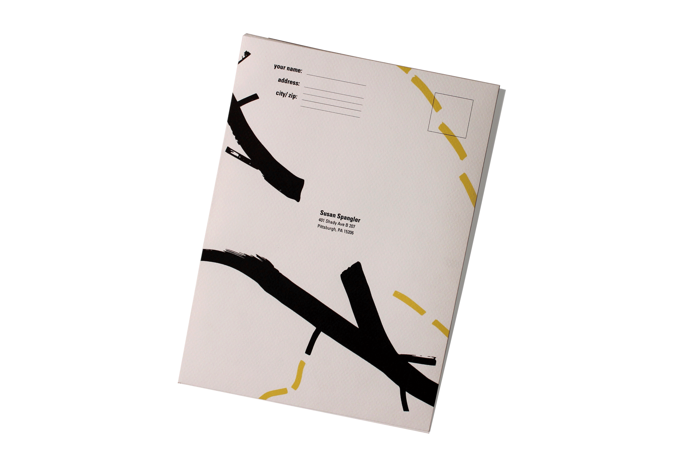
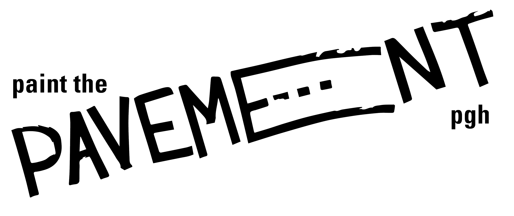
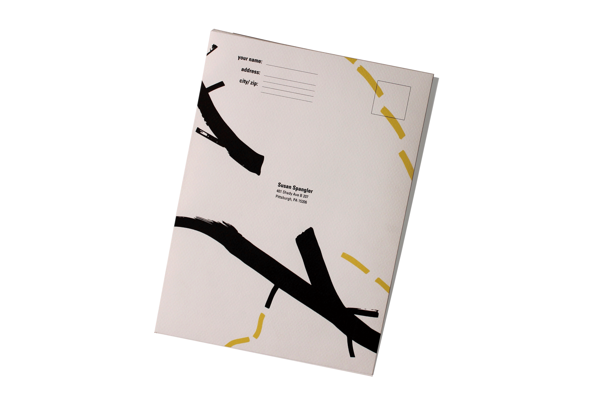
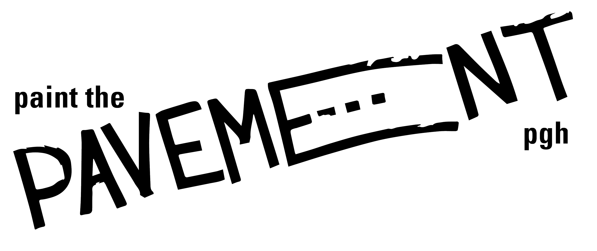

PAINT THE PAVEMENT
Branding / System
Print
Iconography, Communication Design, Social Design, Way-Finding, User Research
Spring 2016
CONTEXT
For this project we were tasked with branding a full system of deliverables to promote “Paint the Pavement”, an organization whose goal is to bring communities together in lower income areas by building connections between artists, organizations and neighborhood residents. Our challenge was to assist users in apply for and understanding the large application process that the organization requires as well as attracting and informing neighborhood communities.
The first deliverable users will interact with - the “how to” guide.
STRATEGY
This is how I planned to draw community leaders and members into the organization; the system would be sent to community leaders who would utilize them to guide them through the process of spreading the word, the large pamphlet would also be distributed throughout the community.
DELIVERABLES
My system has been designed for and inspired by Pittsburgh to align with the organization's goal of bringing people together and creating a sense of unity, place and identity.
The cheat sheet contains information that can be repeated at the sticker walls, information that will help draw users into the program
The graphic inspired by a map of the Pittsburgh river and street as well as the logo for the branded system functions as a way-finding system, guiding the user through the information in a more systematic way while breaking down the information into more digestible pieces. The graphic that I have developed is also a huge component of the overall visual identity and system.
The main part of my system, this pamphlet hold information on how to actually apply, as well as reminders and guides to keep you organized
The last part of the system is the actual application. For the application I utilized the same system and hierarchal decisions that are utilized throughout, however, simplified so the user can focus on the application - not the visual elements.
Using the design of roads as reference, I attempted different mark-making techniques, resulting in my watermark being inspired by the design of roads, hence the “e”. It later went on to influence my type system, the hierarchy throughout as well as the way-finding system I developed for the deliverables.
The last challenge I had to overcome was creating a way-finding system that would assist the user in going through the deliverables as well as make my print pieces more dynamic. I developed a graphic inspired by road design as well as the Pittsburgh map. I try to use the yellow and white lines throughout the pamphlet and print pieces to guide the reader.
Back to Top
Similar Projects: OCD, AIGA Design Census, Lower 9th Ward + 10